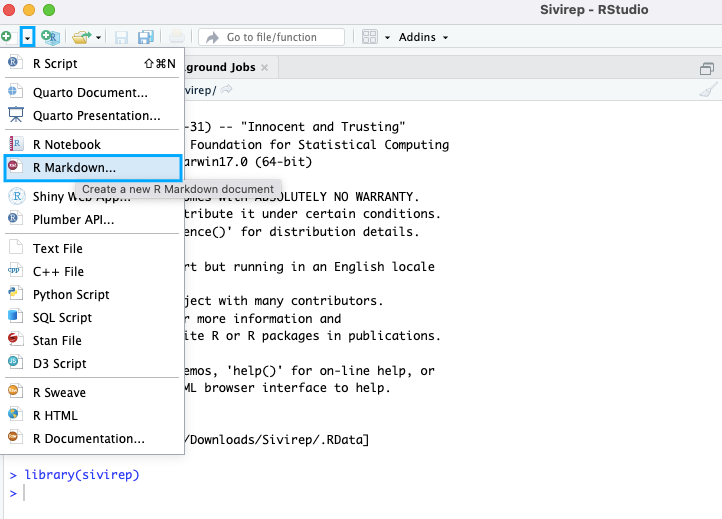
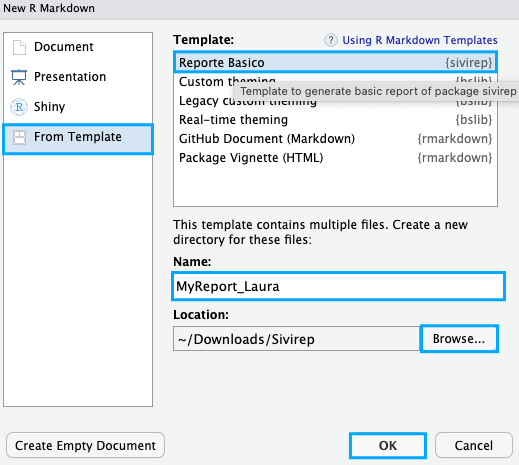
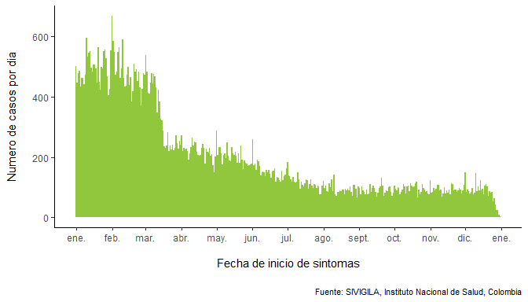
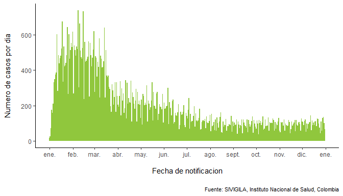

sivirep: Automated reporting from epidemiological surveillance databases 
Current version of sivirep provides functions for data wrangling and automated reports based on linelist data from SIVIGILA, which is the official epidemiological surveillance system for Colombia, South America.
Motivation
Latin America has progressed in the quality of epidemiological notification and surveillance systems. Particularly, Colombia has improved over the years the quality and openness of its official epidemiological surveillance system, SIVIGILA. This system is regulated by Colombia’s National Institute of Health and operated by thousands of health workers at local secretaries of health, hospitals, and local notification units.
However, some challenges remain particularly at local levels in terms of timeliness and quality of epidemiological analytics and epidemiological reports. These tasks may involve a great deal of manual labor reinforced by limitations in training for data analytics, time, technology and quality of internet access in some locations.
sivirep is aimed at providing a set of customisable functions for:
- downloading, pre-processing and preparing SIVIGILA data for further analytics
- producing customisable epidemiological automated reports
- getting feedback on the surveillance system to the source provider
Potential users
- Public health professionals and field epidemiologist users of SIVIGILA source at local levels
- Epidemiology and public health students
- National and international researchers and data analysts
Installation
You can install the development version of sivirep from GitHub with:
# install.packages("remotes")
# remotes::install_github("epiverse-trace/sivirep")
library(sivirep)Quick start
Please check the available diseases and years, using:
list_of_diseases <- list_available_diseases_years()
knitr::kable(list_of_diseases)| enfermedad | aa |
|---|---|
| ACCIDENTE OFIDICO | 2007, 2008, 2009, 2010, 2011, 2012, 2013, 2014, 2015, 2016, 2017, 2018, 2019, 2020, 2021 |
| AGRESIONES POR ANIMALES POTENCIALMENTE TRANSMISORES DE RABIA | 2007, 2008, 2009, 2010, 2011, 2012, 2013, 2014, 2015, 2016, 2017, 2018, 2019, 2020, 2021 |
| ANOMALIAS CONGENITAS | 2007, 2008, 2009, 2010, 2011, 2012, 2013, 2014, 2015, 2016, 2017, 2018, 2019, 2020, 2021 |
| BAJO PESO AL NACER | 2012, 2013, 2014, 2015, 2016, 2017, 2018, 2019, 2020, 2021 |
| CÁNCER DE LA MAMA Y CUELLO UTERINO | 2007, 2008, 2009, 2010, 2011, 2012, 2013, 2014, 2015, 2016, 2017, 2018, 2019, 2019, 2020, 2021 |
| CANCER INFANTIL | 2007, 2008, 2009, 2010, 2011, 2012, 2013, 2014, 2015, 2016, 2017, 2018, 2019, 2020, 2021 |
| CHAGAS | 2007, 2008, 2009, 2010, 2011, 2012, 2013, 2014, 2015, 2016, 2017, 2018, 2019, 2020, 2021 |
| CHIKUNGUNYA | 2007, 2008, 2009, 2010, 2011, 2012, 2013, 2014, 2015, 2016, 2017, 2018, 2019, 2020, 2021 |
| DENGUE | 2007, 2008, 2009, 2010, 2011, 2012, 2013, 2014, 2015, 2016, 2017, 2018, 2019, 2020, 2021 |
| DENGUE GRAVE | 2007, 2008, 2009, 2010, 2011, 2012, 2013, 2014, 2015, 2016, 2017, 2018, 2019, 2020, 2021 |
| DIFTERIA | 2007, 2008, 2009, 2010, 2011, 2012, 2013, 2014, 2015, 2016, 2017, 2018, 2019, 2021 |
| ENCEFALITIS DEL NILO OCCIDENTAL EN HUMANOS | 2007, 2008, 2009, 2010, 2011, 2012, 2013, 2014, 2015, 2016, 2017 |
| ENCEFALITIS EQUINA DEL OESTE EN HUMANOS | 2007, 2008, 2009, 2010, 2011, 2012, 2013, 2014, 2015, 2016, 2017 |
| ENCEFALITIS EQUINA VENEZOLANA EN HUMANOS | 2007, 2008, 2009, 2010, 2011, 2012, 2013, 2014, 2015, 2016, 2017 |
| ENDOMETRITIS PUERPERAL | 2007, 2008, 2009, 2010, 2011, 2012, 2013, 2014, 2015, 2016, 2017 |
| ENFERMEDADES HUERFANAS - RARAS | 2007, 2008, 2009, 2010, 2011, 2012, 2013, 2014, 2015, 2016, 2017 |
| ESI - IRAG (VIGILANCIA CENTINELA) | 2007, 2008, 2009, 2010, 2011, 2012, 2013, 2014, 2015, 2016, 2017, 2018, 2019, 2020, 2021 |
| EVENTO ADVERSO SEGUIDO A LA VACUNACION | 2007, 2008, 2009, 2010, 2011, 2012, 2013, 2014, 2015, 2016, 2017, 2018, 2019, 2020, 2021 |
| FIEBRE AMARILLA | 2007, 2008, 2009, 2010, 2011, 2012, 2013, 2014, 2015, 2016, 2017, 2018 |
| FIEBRE TIFOIDEA Y PARATIFOIDEA | 2007, 2008, 2009, 2010, 2011, 2012, 2013, 2014, 2015, 2016, 2017, 2018, 2019, 2020, 2021 |
| HEPATITIS A | 2007, 2008, 2009, 2010, 2011, 2012, 2013, 2014, 2015, 2016, 2017, 2018, 2019, 2020, 2021 |
| HEPATITIS C | 2018, 2019, 2020, 2021 |
| HIPOTIROIDISMO CONGENITO | 2007, 2008, 2009, 2010, 2011, 2012, 2013, 2014, 2015, 2016, 2017, 2018, 2019, 2020, 2021 |
| INFECCION ASOCIADA A DISPOSITIVOS | 2007, 2008, 2009, 2010, 2011, 2012, 2013, 2014, 2015, 2016, 2017 |
| INFECCION RESPIRATORIA AGUDA GRAVE IRAG INUSITADA | 2007, 2008, 2009, 2010, 2011, 2012, 2013, 2014, 2015, 2016, 2017, 2018, 2019, 2020, 2021 |
| INTOXICACION POR FARMACOS | 2007, 2008, 2009, 2010, 2011, 2012, 2013, 2014, 2015, 2016, 2017, 2018, 2019, 2020, 2021 |
| INTOXICACION POR METALES PESADOS | 2007, 2008, 2009, 2010, 2011, 2012, 2013, 2014, 2015, 2016, 2017, 2018, 2019, 2020, 2021 |
| INTOXICACION POR METANOL | 2007, 2008, 2009, 2010, 2011, 2012, 2013, 2014, 2015, 2016, 2017, 2018, 2019, 2020, 2021 |
| INTOXICACION POR MONOXIDO DE CARBONO Y OTROS GASES | 2007, 2008, 2009, 2010, 2011, 2012, 2013, 2014, 2015, 2016, 2017, 2018, 2019, 2020, 2021 |
| INTOXICACION POR OTRAS SUSTANCIAS QUIMICAS | 2007, 2008, 2009, 2010, 2011, 2012, 2013, 2014, 2015, 2016, 2017, 2018, 2019, 2020, 2021 |
| INTOXICACION POR PLAGUICIDAS | 2007, 2008, 2009, 2010, 2011, 2012, 2013, 2014, 2015, 2016, 2017, 2018, 2019, 2020, 2021 |
| INTOXICACION POR SOLVENTES | 2007, 2008, 2009, 2010, 2011, 2012, 2013, 2014, 2015, 2016, 2017, 2018, 2019, 2020, 2021 |
| INTOXICACION POR SUSTANCIAS PSICOACTIVAS | 2007, 2008, 2009, 2010, 2011, 2012, 2013, 2014, 2015, 2016, 2017, 2018, 2019, 2020, 2021 |
| ISO | 2007, 2008, 2009, 2010, 2011, 2012, 2013, 2014, 2015, 2016, 2017 |
| LEISHMANIASIS CUTANEA | 2007, 2008, 2009, 2010, 2011, 2012, 2013, 2014, 2015, 2016, 2017, 2018, 2019, 2020, 2021 |
| LEISHMANIASIS MUCOSA | 2007, 2008, 2009, 2010, 2011, 2012, 2013, 2014, 2015, 2016, 2017, 2018, 2019, 2020, 2021 |
| LEISHMANIASIS VISCERAL | 2007, 2008, 2009, 2010, 2011, 2012, 2013, 2014, 2015, 2016, 2017, 2018, 2019, 2020, 2021 |
| LEPRA | 2007, 2008, 2009, 2010, 2011, 2012, 2013, 2014, 2015, 2016, 2017, 2018, 2019, 2020, 2021 |
| LEPTOSPIROSIS | 2007, 2008, 2009, 2010, 2011, 2012, 2013, 2014, 2015, 2016, 2017, 2018, 2019, 2020, 2021 |
| LEUCEMIA AGUDA PEDIATRICA LINFOIDE | 2007, 2008, 2009, 2010, 2011, 2012, 2013, 2014, 2015, 2016, 2017, 2018, 2019, 2020, 2021 |
| LEUCEMIA AGUDA PEDIATRICA MIELOIDE | 2007, 2008, 2009, 2010, 2011, 2012, 2013, 2014, 2015, 2016, 2017, 2018, 2019, 2020, 2021 |
| MALARIA ASOCIADA (FORMAS MIXTAS) | 2007, 2008, 2009, 2010, 2011, 2012, 2013, 2014, 2015, 2016, 2017, 2018, 2019, 2020, 2021 |
| MALARIA COMPLICADA | 2007, 2008, 2009, 2010, 2011, 2012, 2013, 2014, 2015, 2016, 2017, 2018, 2019, 2020, 2021 |
| MALARIA FALCIPARUM | 2007, 2008, 2009, 2010, 2011, 2012, 2013, 2014, 2015, 2016, 2017, 2018, 2019, 2020, 2021 |
| MALARIA VIVAX | 2007, 2008, 2009, 2010, 2011, 2012, 2013, 2014, 2015, 2016, 2017, 2018, 2019, 2020, 2021 |
| MENINGITIS OTROS | 2007, 2008, 2009, 2010, 2011, 2012, 2013, 2014, 2015, 2016, 2017 |
| MENINGITIS MENINGOCÓCICA | 2007, 2008, 2009, 2010, 2011, 2012, 2013, 2014, 2015, 2016, 2017, 2018, 2019, 2019, 2020, 2021 |
| MENINGITIS POR HAEMOPHILUS INFLUENZAE | 2007, 2008, 2009, 2010, 2011, 2012, 2013, 2014, 2015, 2016, 2017, 2018, 2019, 2019, 2020, 2021 |
| MENINGITIS POR NEUMOCOCO | 2007, 2008, 2009, 2010, 2011, 2012, 2013, 2014, 2015, 2016, 2017, 2018, 2019, 2019, 2020, 2021 |
| MENINGITIS TUBERCULOSA | 2007, 2008, 2009, 2010, 2011, 2012, 2013, 2014, 2015, 2016, 2017, 2018, 2019, 2020, 2021 |
| MORBILIDAD MATERNA EXTREMA | 2007, 2008, 2009, 2010, 2011, 2012, 2013, 2014, 2015, 2016, 2017, 2018, 2019, 2020, 2021 |
| MORBILIDAD POR IRA | 2012, 2013, 2014, 2015, 2016, 2017, 2018, 2019, 2020, 2021 |
| MORTALIDAD MATERNA | 2007, 2008, 2009, 2010, 2011, 2012, 2013, 2014, 2015, 2016, 2017, 2018, 2019, 2020, 2021 |
| MORTALIDAD PERINATAL Y NEONATAL TARDIA | 2008, 2009, 2010, 2011, 2012, 2013, 2014, 2015, 2016, 2017, 2018, 2019, 2020, 2021 |
| MORTALIDAD POR DENGUE | 2007, 2008, 2009, 2010, 2011, 2012, 2013, 2014, 2015, 2016, 2017, 2018, 2019, 2020, 2021 |
| MORTALIDAD POR DESNUTRICION | 2013, 2014, 2015, 2016, 2017, 2018, 2019, 2020, 2021 |
| MORTALIDAD POR EDA 0-4 AÑOS | 2007, 2008, 2009, 2010, 2011, 2012, 2013, 2014, 2015, 2016, 2017, 2018, 2019, 2019, 2020, 2021 |
| MORTALIDAD POR IRA | 2007, 2008, 2009, 2010, 2011, 2012, 2013, 2014, 2015, 2016, 2017, 2018, 2019, 2020, 2021 |
| MORTALIDAD POR MALARIA | 2007, 2008, 2009, 2010, 2011, 2012, 2013, 2014, 2015, 2016, 2017, 2018, 2019, 2020, 2021 |
| PARALISIS FLACIDA AGUDA (MENORES DE 15 AÑOS) | 2007, 2008, 2009, 2010, 2011, 2012, 2013, 2014, 2015, 2016, 2017, 2018, 2019, 2020 |
| PAROTIDITIS | 2007, 2008, 2009, 2010, 2011, 2012, 2013, 2014, 2015, 2016, 2017, 2018, 2019, 2020, 2021 |
| RUBEOLA | 2007, 2008, 2009, 2010, 2011, 2012, 2013, 2014, 2015, 2016, 2017 |
| SARAMPION | 2007, 2008, 2009, 2010, 2011, 2012, 2013, 2014, 2015, 2016, 2017, 2018, 2019, 2020 |
| SINDROME DE RUBEOLA CONGENITA | 2007, 2008, 2009, 2010, 2011, 2012, 2013, 2014, 2015, 2016, 2017 |
| TETANOS ACCIDENTAL | 2007, 2008, 2009, 2010, 2011, 2012, 2013, 2014, 2015, 2016, 2017, 2018, 2019, 2020, 2021 |
| TETANOS NEONATAL | 2007, 2008, 2009, 2010, 2011, 2012, 2013, 2014, 2015, 2016, 2017, 2018, 2019, 2020, 2021 |
| TOS FERINA | 2007, 2008, 2009, 2010, 2011, 2012, 2013, 2014, 2015, 2016, 2017, 2018, 2019, 2020, 2021 |
Future versions
Future versions of sivirep may include:
- Interaction with other data sources in Colombia
- Other epidemiological surveillance systems in Latin America
Contributions
Contributions are welcome via pull requests.
Contributors to the project include:
Geraldine Gómez-Millán (author)
Zulma M. Cucunubá (author)
Hugo Gruson (contributor)
Laura Gómez-Bermeo (contributor to documentation)
Code of Conduct
Please note that the linelist project is released with a Contributor Code of Conduct. By contributing to this project, you agree to abide by its terms.
Get Started
For automated reporting
After installation and importation of the library you can start using sivirep:
library(sivirep)Check the list of diseases available to make a report with sivirep in:
Currently, sivirep provides a report template Reporte Básico {sivirep}, which contains six sections and receive two input parameters: disease (the disease name) and year in order to download the data from SIVIGILA source.
The template can be used by following the following steps:
- In RStudio click ‘File/New File/R’ Markdown:

- Select the left panel option: ‘From Template’, then select the template report called
Reporte Básico {sivirep}, indicate the name you want for the report (i.e. MyReport_Laura), the location to store it and press ‘Ok’.

- Then, you can select the disease (the disease name) and the year of the report. This action will download the data wanted and also will provide the template in R Markdown .Rmd file. For this, it is important to find Knit button, display the options and select ‘Knit with parameters’.

Wait a few seconds while the report is rendered in a PDF file.
You can add, edit, delete and customise sections of the report in the R Markdown file generated earlier.

For more details on generic Rmarkdown templates and reports please see rmarkdown templates.
For customisable analytics or reports
This section provides a basic set of instructions for using sivirep 0.0.1 if: - You have already produced an .Rmd file and you want to edit a report - You want to perform customised analytics without an .Rmd file
1. Importing sivigila data
The SIVIGILA source provides the historical linelist data up to the latest closed epidemiological year. The closing of an epidemiological year usually occurs in April next year (i.e. if you’re using sivirep in march 2023, you may be able to access the historical data up to December 2021) for most diseases with a few exceptions.
Please check the available diseases and years, using:
list_of_diseases <- list_available_diseases_years()Once you have decided the disease and year you want, import_linelist_disease_year is the function that allows importation of data from sivigila service using a parameterised format based on disease and year.
disease_data <- import_linelist_disease_year(year = 2020,
disease_name = "dengue")💡 Tip 1 - Avoid time delays when importing data
-
sivirep0.0.1 is meant to assist with access to SIVIGILA source. This process of downloading the information may take a few minutes depending on the size of the dataset. To avoid repeating downloading the same data every time you can usecache = TRUEin the functionimport_linelist_disease_yearThis option is set by default.
2. Cleansing sivigila data
SIVILA data is a highly trusted official source of information with ISO certification of data quality. Nevertheless, sometimes there are some potential outliers in the data that may need some additional cleansing.
sivirep provides a wrapper generic function called cleansing_sivigila_data for identifying and correcting errors, inconsistencies, and discrepancies in the datasets to improve their quality and accuracy. This process can include removing duplicates, correcting typographical errors, imputing missing values, and validating data, among other tasks, such as removing improbable dates, cleaning geolocation codes, and standardising column names and age categories.
clean_disease_data <- cleansing_sivigila_data(disease_data, year = 2020)The cleansing functions inside cleansing_sivigila_data have been gathered and built based on the experience from field epidemiologists. These may include internal functions such as: clean_labels: function that cleans and standardises the column names of SIVIGILA linelist data based on SIVIGILA data dictionary.
-
clean_disease_ages: function that cleans ages of SIVIGILA linelist data -
format_dates_values: function that gives a specific format to a date -
clean_disease_dates: function that cleans dates from the disease data -
clean_depto_codes: function that cleans the geographical department codes of the disease data
The user may want to use these functions individually or simply use the generic wrapper cleansing function cleansing_sivigila_data
3. Temporal distribution of cases
In sivirep the temporal distribution of cases is defined by the variables symptom onset date and notification date, for each of these variables there are specialised functions to group the data and generate the plots.
3.1. Group the data by onset symptoms at the desired temporal scale
To generate the distribution of cases by symptom onset date it is necessary to group the data by these variables. sivirep provides a function that allows this grouping called group_onset_symptoms, in which you can specify the time unit to group these dates, the allowed values for this parameter are: day and month.
cases_onset_symptoms_by_day <- group_onset_symptoms(disease_data = clean_disease_data,
type = "day")
cases_onset_symptoms_by_month <- group_onset_symptoms(disease_data = clean_disease_data,
type = "month") 💡 Tip 2 - Get the first n months with most cases
- When building a report section or analysing this data it can be useful to get the months with the most cases, in
sivirepyou can use the functionget_months_most_casesto get this information.
The graph that allows to visualise this distribution must be generated with the function plot_onset_symptoms. Please notice that even if you have grouped the data by day you may prefer to plot it by month, as in:
plot_onset_symptoms(data_grouped = cases_onset_symptoms_by_day,
break_tick_date = "months")
3.2. Group the data by notification date at the desired temporal scale
The process to generate the distribution of cases by notification date consist in group the disease data by this variables, you can use the following function of sivirep to do this:
cases_notification_date_by_day <- group_notification_date(disease_data = clean_disease_data,
type = "day")
cases_notification_date_by_month <- group_notification_date(disease_data = clean_disease_data,
type = "month") The graph that allows to visualise this distribution must be generated with the function plot_notification_date. Please notice that even if you have grouped the data by day you may prefer to plot it by month, as in:
plot_notification_date(data_grouped = cases_notification_date_by_day,
break_tick_date = "months")
4.1. Sex variable
When analysing or reporting disease data, it is often necessary to determine the distribution of cases by gender or sex. However, the SIVIGILA source only records sex.
sivirep provides a function that aggregates and computes percentages by sex automatically after the cleansing process.
cases_sex <- group_sex(disease_data = clean_disease_data,
percentage = TRUE)Also, sivirep has a plot_sex function:
plot_sex(data_grouped = cases_sex)
The distribution of cases by sex and epidemiological week can be using the group_sex_epiweek function provided by sivirep
cases_sex_epiweek <- group_sex_epiweek(disease_data = clean_disease_data)The corresponding visualisation function is plot_sex_epiweek that provides sivirep:
plot_sex_epiweek(data_grouped = cases_sex_epiweek)
4.2. Age variable
Age is an important variable to analyse, as it is a known risk factor for many diseases. Certain diseases and conditions tend to occur more frequently in specific age groups, and this distribution can help identify populations at higher risk and implement targeted prevention and control strategies.
sivirep provides a function called group_age, which can group disease data by age groups. By default this function produces age ranges with intervals of 10 years. Also, users can customise a different age range.
cases_age <- group_age(disease_data = clean_disease_data, age_interval = 10)The corresponding plot function is plot_age
plot_age(data_grouped = cases_age)
4.3. Age and sex simultaneously
sivirep provides a function called group_age_sex, which can group disease data by age ranges and sex simultaneously and obtain their number of cases and percentages. Also, the age interval can be customised.
cases_age_sex <- group_age_sex(disease_data = clean_disease_data,
age_interval = 10)The corresponding plotting function is plot_age_sex.
plot_age_sex(data_grouped = cases_age_sex)
5. Spatial distribution of cases
Obtaining the spatial distribution of cases is helpful to identify areas with a high concentration of cases, disease clusters and environmental or social risk factors.
In Colombia, there are 32 administrative geographic units (adm1) called departments. sivirep provides a function called group_deptos which allows obtaining a data.frame of grouped cases by department.
spatial_dept_dist <- group_dept(disease_data = clean_disease_data)Currently, with the function called plot_dept_map the user can produce a static map of Colombia with the distribution of cases by departments.
plot_dept_map(data_grouped = spatial_dept_dist)
💡 Tip 3 - Get the row with most cases
- When building a report section or analysing this data it can be helpful to know which gender has the most cases, in
sivirepyou can use the functionget_most_casesto get this information. This function works with any dataset that contains a column called “cases” by any level of aggregation.